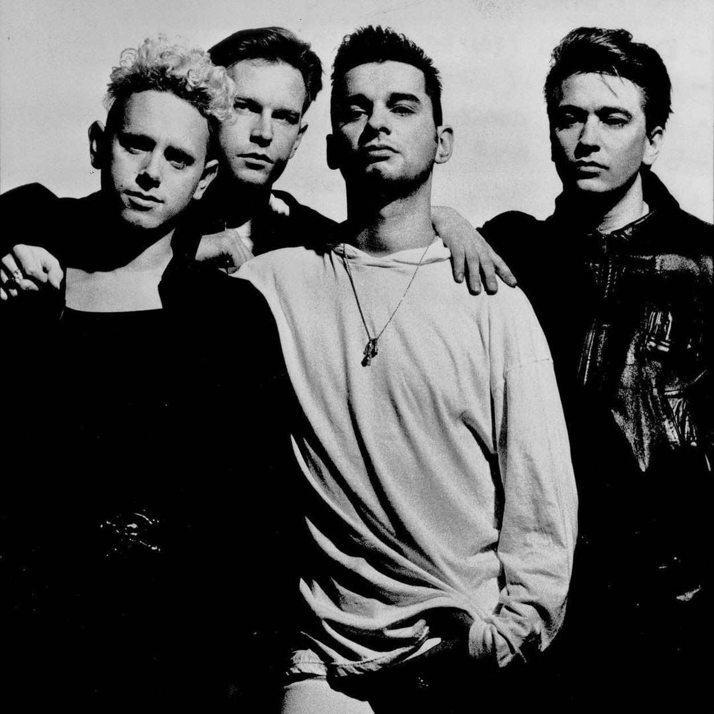
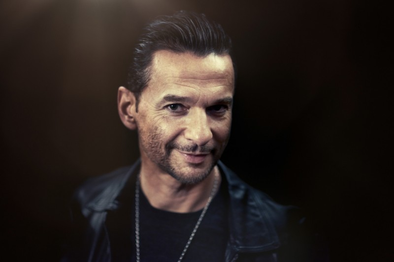

Дейв Гаан (англ. Dave Gahan; родился 9 мая 1962 года) — английский музыкант, певец и автор песен, наиболее известен как вокалист электронной группы Depeche Mode с момента еë образования в 1980 году. Журнал Q поставил Гаана на 73-е место в своём списке «100 величайших певцов» и 27-е в списке «100 величайших фронтменов». Гаан также известен «доминирующим присутствием на сцене» и своим «обширным, глубоким баритоном».
Биография
Гаан родился под именем Дэвид Колкотт 9 мая 1962 года. Когда Дэйву было всего шесть месяцев, его отец покинул семью. Вскоре родители Дейва развелись и Сильвия вместе с Дейвом и его старшей сестрой Сью (1960 г. р.) переехали жить в город Базилдон (Эссекс) и там она вышла замуж за Джека Гаана (администратора компании «Royal Dutch Shell»). Сильвия родила двоих детей от Джека, Питера (1966 г. р.) и Фила (1968 г. р.), которые стали единоутробными братьями Дейва. Дейв и Сью считали второго мужа их матери, Джека, родным отцом, так как он активно участвовал в их воспитании.Когда Дейву было 9 лет умер его отчим. Это глубоко потрясло его. После смерти Джека в дом к Сильвии приехал её бывший муж Леонард Колкотт.
Во время учëбы в школе, в Базилдоне Гаан часто прогуливал занятия, имел проблемы с законом и трижды попадал в суд по делам несовершеннолетних за хулиганские выходки, начиная от граффити на стенах до простых краж. Он наслаждался острыми ощущениями от угона машин, езды на них и их поджогов. Гаан вспоминает о том времени: «Я был довольно диким. Меня заводило вот это преследование полиции и погоня от неë. Прячась за стеной с бьющимся сердцем, ты получаешь настоящий пинок – „они тебя достанут?“». Будучи в последнем классе школы, Гаан пробовал устроиться помощником слесаря в «North Thames Gas», однако по требованию своего офицера-надзирателя вынужден был рассказать на собеседовании о преступном прошлом. В итоге, он не был принят на эту работу, что подтолкнуло Гаана разгромить офис своего надзирателя. В качестве наказания Дейв был приговорён к тюремному заключению в подростковом исправительном центре в Ромфорде. Наказание Дейв должен был отбывать каждые выходные в течение года.
Карьера
Depeche Mode
Карьера в Depeche Mode (1980 – настоящее время)
В марте 1980 года Мартин Гор, Энди Флетчер и Винс Кларк сформировали группу Composition of Sound, в составе которой Кларк пел и играл на гитаре, Гор на клавишных, а Флетчер на бас-гитаре. Впоследствии Кларк и Флетчер перешли на синтезаторы. В том же году Гаан присоединился к группе после того, как Кларк был впечатлëн его исполнением песни Дэвида Боуи «Heroes». Вскоре группа была переименована в Depeche Mode, название, предложенное Гааном после того, как он наткнулся на модный журнал под названием Dépêche-mode. Пионеры новой волны/синти-попа начала 1980-х годов, Depeche Mode выпустили 14 студийных альбомов, четыре сборника и два альбома ремиксов. Группа достигла мировых продаж, превысивших 100 миллионов записей. Четыре сингла группы занимали первое место в чарте Billboard Alternative Songs: «Enjoy the Silence» (1990), «Policy of Truth (1990), «I Feel You» (1993) и «Walking in My Shoes» (1993).

В интервью 2003 года Гаан говорил, что был слегка разочарован малым количеством экспериментов во время записи альбома Exciter. В 2004 году это привело его к тому, что он заявил своим коллегам по группе о написании половины песен для их следующего альбома, и он покинет коллектив, если не будет автором песен. Так, Гаан стал автором трëх песен с альбома 2005 года Playing the Angel: «Suffer Well» (номирована на премию Грэмми), «I Want It All» и «Nothing's Impossible». Песня «Suffer Well» была выпущена в качестве сингла в 2006 году и заняла 12-е место в UK Singles Chart. Гаан также написал текст к бонус-треку «Oh Well» с альбома Sounds of the Universe, а музыка была написана Мартином Гором. Это было их первое сотрудничество над записью песен.
На сценическую личность Гаана повлиял Дэйв Вэниан, фронтмен The Damned.
Сольное творчество
В 2003 году Гаан выпустил свой первый сольный альбом Paper Monsters (который он написал в соавторстве с гитаристом и другом Ноксом Чандлером), за которым последовал Paper Monsters Tour (включая выступление на фестивале Гластонбери), исполнив как свои новые сольные треки, так и любимые фанатами Depeche Mode. Альбом имел скромный успех. Первый сингл «Dirty Sticky Floors» и альбом достигли позиций в чартах UK Singles Chart и UK Albums Chart соответственно.
В 2007 году Гаан объявил, что работает над новым альбомом, в видео-поздравлении на официальном сайте Depeche Mode, записанном на благотворительном мероприятии MusiCares 11 мая. Альбом под названием Hourglass сопровождался работой Эндрю Филпотта и Кристиана Эйгнера. Материал был записан в студии 11th Floor в Нью-Йорке. По словам Гаана, в альбоме Hourglass больше электронного звучания, чем в Paper Monsters.
Личная жизнь
3 августа 1985 года Гаан женился на своей давней подруге Джо Фокс. 14 октября 1987 года у них родился сын Джек. В 1991 году, отчасти из-за зависимости Дейва от героина, он разводится с Джо, а через год женится на Терезе Конрой. Фокс и Конрой можно увидеть в фильме «101» (Тереза тогда помогала группе в качестве тур-менеджера). В 1994 году Конрой уходит, заявив, что больше не верит его обещаниям «завязать». В 1999 году Гаан женился на гречанке Дженнифер Склиаз, а 29 июля у них родилась дочь Стелла Роуз. Также у Дженнифер есть сын Джим от первого брака, в 2010 году он был официально усыновлён Гааном.
Перед браком со Склиаз крестился в православие, но не практикует ни одну из религий.
С 1996 года Гаан живёт в Нью-Йорке.
Альбомы
- Paper Monsters (2003)
- Hourglass (2007)
- The Light The Dead See (2012, совместно с Soulsavers)
- Angels & Ghosts (2015, совместно с Soulsavers)
- Imposter (2021, совместно с Soulsavers)